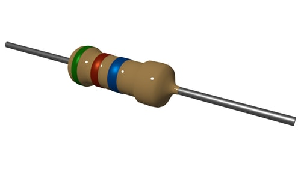
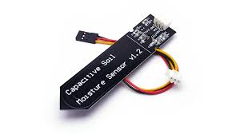

Plant Vitals Sensor

Table of Contents
- Background
- Design
- Specifications
- Component List
- Block Diagram
- Schematic
- Code
- Photos & Videos
- Testing
- Ongoing Issues
Background
For my second project after my Kart, I took inspiration from a plant that I had just bought. The plant was a Rabbit's Foot Fern and I bought it because I thought it looked cool. It got me thinking about how a plant only needs a few resources to live and grow. Sunlight and water are the two main ingredients to successfully grow a plant, but different plants like different environments. There are also other considerations such as temperature and humidity where the optimal value changes from plant to plant. Since I like working with sensors, I thought that combining several of them into one package would be a great project. In order to add a bit of complexity, I also decided to create a server to store all of the data points and to create graphs. I felt that this device was different enough from the Kart to add variety to my project portfolioDesign
The two main parts of this project are the physical device and the server that it connects to. The device centers around the ESP32 microcontroller which is WIFI capable. The WIFI is used to connect to the server which is on my WIFI network. The local server is based on a Raspberry Pi which I can simply leave plugged in so that I can collect data. On the device, the sensors that it uses to collect data on a plant are for water moisture, light, temperature, and humidity. All of these sensors are located on the arm of the device in order to dig it into the plant's soil. The LCD display will display the data coming in by pressing the button to cycle through the sensors. If the button is held down, the device will go into plant testing mode where it will check the current sensor data and determine if the plant is healthy. If the LED flashes blue then the plant is healthy. If the LED flashes red, then the plant needs to be looked after. At a certain interval of time, the current sensor data will be uploaded to the server. This interval can be adjusted to any value. By going on the local server, the MySQL database can be acessed as well as the data graphs.
Specifications
- Mass: 202 g
Component List
Resistors: 4x 330 ohm, 1x 100 ohm, 2x 5.1k ohm, 1x 10 ohm, 1x 3.3k ohm
red-blue LED
5v DC-DC Converter
1602 LCD Display
Push Button

Piezo Buzzer
CdS photoresistor
DHT11 basic temperature-humidity sensor
Capacative Soil Moisture Sensor
2x 18650 Li-Ion Batteries

Slide Switch

Raspberry pi
Block Diagram
Schematic
GitHub Code
Photos & Videos
Inside Plant Sensor

Top Of Sensor Array
3d Printed Sensor Clip Design
Database Graph
Device Demo
Shows different sensor values, then activates plant testing mode.
Testing
Blah Blah Blah
Ongoing Issues
- Battery voltage sensor needs to be soldered
- Database graphs crash when one key given null value
- Measurements of a healthy plant need to be defined